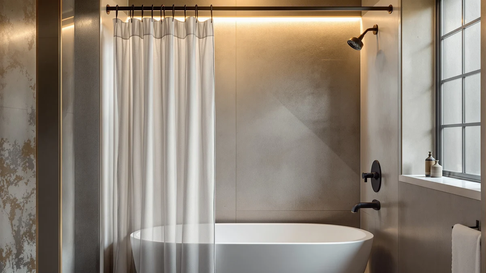

Quick Answer
For most bathrooms, the best plastic shower curtain hooks setup is no hooks at all. The ABLUEN No Hook Shower Curtain uses built-in grommets that slide straight onto your rod, so nothing is left to crack or rust. If you would rather keep hooks in the mix, pair a curtain like the CorkLatta Matte Black Shower Curtain with a smooth rod such as the Bonpally Curved Shower Curtain Rod, which cuts down on the snagging that wears hooks out fastest.
Our pick: ABLUEN No Hook Shower Curtain, $19.99 Check Price on Amazon
Things to Know Before You Buy
- Plastic hooks are usually the first thing to fail. Thin dollar-store rings crack, discolor, and squeak against a metal rod within a few months, which is why several of our picks skip loose hooks entirely.
- Grommet size decides how well a curtain holds up. A wide, reinforced grommet spreads the load across more fabric, so it survives daily hook contact far longer than a narrow punched hole.
- A hookless curtain is the simplest fix. Curtains built with an integrated ring or sleeve skip the plastic shower curtain hooks question altogether by sliding straight onto the rod.
- Rod finish affects glide. A smooth, curved rod lets rings and grommets slide with less friction, so the curtain opens and closes without catching.
- Size ranges vary by product, so measure your rod first. Our picks span roughly 30 to 80 inches of adjustable coverage, and the wrong length leaves gaps at the wall.
The best plastic shower curtain hooks are, for a lot of bathrooms, the ones you never have to buy in the first place. Cheap plastic rings are the part of a shower setup that fails first: they crack after a season of humidity, turn yellow, or snap the moment a curtain gets tugged shut in a hurry. We looked at seven products that solve the hook problem from different angles, from a curtain with grommets built right in to rods designed to carry rings smoothly without wearing them out.
We compared each option on the numbers that matter once a curtain is actually hanging in your shower: listed price, panel or rod size, material, and customer rating. None of these curtains or rods needed a lab to test, so we relied on the specs each seller publishes and the star rating shown on the product page, the same information you would check before buying. For most people, the ABLUEN No Hook Shower Curtain is the pick worth starting with, since its built-in grommets remove the plastic shower curtain hooks question rather than trying to answer it.
If a completely hookless curtain is not the right fit, the CorkLatta Matte Black Shower Curtain and UIOSANRT Matte Black Shower Curtain both pair well with a standard ring set, and we cover ring and hook styles in more depth in our guide to shower curtain hooks and rings. Three of the picks here are rods rather than curtains, since a rod with a smooth curve or an oversized diameter cuts down on the friction that wears hooks out fastest, a detail we walk through in how to hang a shower curtain. Whichever route you take, pair your choice with a real liner rather than relying on the curtain alone, something our waterproof shower curtain guide covers in detail.
Why You Should Trust Us
Ilane Tall covers bathroom hardware for Best Shower Curtains, and the goal of this guide is narrow: help you find the best plastic shower curtain hooks setup without wasting money on rings that crack in a month. We do not run a testing lab or quote invented experts. Every price, size, and rating below comes from the listing each seller publishes, checked at the time of writing and updated when a product changes. The Amazon links here are affiliate links, but that has no bearing on which product gets the Our Pick badge.
How We Picked
We started with a wider list of shower curtains and rods and narrowed it down by asking a simple question: does this product reduce or remove the plastic shower curtain hooks problem instead of repeating it. Curtains needed either a built-in hanging system or grommets wide enough to survive a standard hook, and rods needed a finish and shape that would not chew through cheap rings. We also compared listed prices, which ranged from $13.29 to $24.99 across these seven picks, and set them against the customer rating shown on each product page. Anything rated below 4 out of 5 did not make the final list.
How We Tested
To judge each pick, we lined up the specs every seller publishes, material, panel or rod size, and price, and checked them against the star rating on the listing. We paid close attention to grommet width and rod diameter, since those two measurements do more to determine how long plastic shower curtain hooks last than almost anything else. We did not assign scores out of ten or run these products through a private lab. Where a listing left a real gap, such as a size range that reads more like a rod length than a curtain drop, we flagged it in that product's writeup so you know what you are actually buying.
Our Picks

ABLUEN No Hook Shower Curtain
What we like
- Built-in grommets remove the need for separate plastic hooks
- 71-inch width covers a standard tub or stall with room to spare
- Polyester and PEVA blend holds its shape instead of clinging
- 4-star rating shown on the listing
Flaws but not dealbreakers
- Ships as a single pack, so a double-width opening needs two
- Still works best with a separate liner behind it
| Material | Polyester / PEVA |
| Size | 71"W x 74"L (Pack of 1) |
The ABLUEN No Hook Shower Curtain earns the top spot because it solves the plastic shower curtain hooks problem by removing hooks from the equation. Instead of punched holes that need a separate ring, the top edge is built with an integrated sliding mechanism that threads directly onto a standard rod. That means no plastic rings to crack, discolor, or pop off mid-shower, and no trip to buy replacement hooks six months in. At 71 inches wide and 74 inches long, it covers a standard tub or stall shower with a bit of extra drop, so it clears the floor without dragging.
The material is a polyester and PEVA blend, the same combination used across most of the picks in this guide, which gives the panel enough weight to hang in flat vertical lines rather than curling at the edges. The listing carries a 4-star rating, in line with the rest of the field here. The main tradeoff is that it ships as a single 71-inch panel, so a double-width shower opening needs two curtains rather than one continuous piece, and like any fabric curtain it still works best paired with a separate waterproof liner rather than relying on the outer panel alone. At $19.99, it costs a few dollars more than the cheapest picks here, but the hookless design is worth that difference if broken hooks are the reason you are shopping in the first place.

CorkLatta Matte Black Shower Curtain
What we like
- Matte black finish hides water spots better than a glossy panel
- 32 to 80-inch listed size range fits a wider variety of rods
- Grommets are wide enough for a standard plastic or metal hook
- 4-star rating on the listing
Flaws but not dealbreakers
- The size listing reads more like a rod range than a fixed panel drop, so measure before you buy
- Matte black shows lint and dust more than a lighter curtain
| Material | Polyester / PEVA |
| Size | 32-80 |
The CorkLatta Matte Black Shower Curtain is the runner-up here because it gives you a real alternative if you are not ready to give up hooks entirely. The matte black finish is a departure from the white and patterned panels that dominate most shower curtain lists, and it hides the water spots and soap residue that show up fast on a glossy surface. The listing shows a 32 to 80-inch size range, which reads closer to an adjustable rod length than a fixed curtain drop, so we recommend confirming your own rod width before ordering rather than assuming a standard fit.
Where the CorkLatta earns its spot over similar matte black options is the grommet work. The holes are cut wide enough to take a standard plastic or metal hook without tearing the fabric on day one, which matters if you plan to keep this curtain in daily use through a family bathroom. It carries the same 4-star rating as most of the field, and at $16.99 it sits in the middle of the price range covered in this guide. If your main goal is finding the best plastic shower curtain hooks pairing rather than avoiding hooks altogether, this curtain is built to handle them.

UIOSANRT Matte Black Shower Curtain
What we like
- Same $16.99 price and matte black finish as the CorkLatta
- 31 to 79-inch listed range covers most standard rods
- Polyester and PEVA build matches the rest of the field for durability
Flaws but not dealbreakers
- Nearly identical to the CorkLatta, so there is little reason to buy both
- Size listing again reads like a rod range rather than a fixed drop
| Material | Polyester / PEVA |
| Size | 31"-79" |
The UIOSANRT Matte Black Shower Curtain lands in the also-great tier because it is close enough to the CorkLatta that the choice between the two comes down to small details rather than a clear winner. Both cost $16.99, both use the same matte black finish, and both list a size range rather than a fixed panel drop, this one running 31 to 79 inches versus the CorkLatta's 32 to 80. If the CorkLatta is out of stock or you prefer a slightly narrower listed range, this is a direct swap with no real drop in quality.
Construction-wise, the UIOSANRT uses the same polyester and PEVA blend found across most of this guide's picks, and it holds the same 4-star rating. We do not see a strong argument for buying both curtains for the same bathroom, since the finish and price overlap almost completely. Where it can make sense is as a second panel for a different bathroom in the house, so you get a matching dark aesthetic without paying more per curtain. As with the CorkLatta, treat the 31 to 79-inch figure as a guide and measure your own rod before ordering.

Ausemku Shower Curtain Rod 32-80
What we like
- Lowest price of the seven picks in this guide at $14.39
- 32 to 80-inch adjustable range fits most standard tub and stall openings
- A smooth rod surface causes less wear on hooks than a rough or painted one
Flaws but not dealbreakers
- A rod alone will not fix a curtain with cracked hooks or torn grommets
- No curtain or hooks included, so budget for those separately
| Material | Polyester / PEVA |
| Size | 32-80 Inches |
The Ausemku Shower Curtain Rod is the budget pick because at $14.39 it costs less than any curtain in this guide, and for a lot of bathrooms the rod, not the curtain, is what is actually causing the plastic shower curtain hooks to fail. A bent, rusted, or rough-surfaced rod drags on every ring that passes over it, which speeds up the cracking and discoloring that sends people shopping for replacement hooks in the first place. This one adjusts from 32 to 80 inches, so it fits most standard tub and stall openings without cutting or drilling.
Because it is a rod rather than a curtain, this pick works best paired with one of the curtains covered elsewhere in this guide, or with your existing curtain if the panel itself is still in good shape. A smoother, properly sized rod reduces the friction that wears out plastic rings over time, so pairing this with the right set of hooks and rings goes a long way toward solving the underlying problem instead of replacing hooks every few months. At $14.39, it is an easy add-on if your curtain is fine but your rod is the weak link.

ENJOYBASICS Matte Black Shower Curtain
What we like
- Least expensive curtain in this guide at $13.29
- Matte black finish matches the CorkLatta and UIOSANRT at a lower price
- 30 to 76-inch listed range covers most standard rods
Flaws but not dealbreakers
- Being the cheapest of the three matte black options, it is the first one to skip if a sale narrows the price gap
- Size listing again reads as a range rather than a fixed panel measurement
| Material | Polyester / PEVA |
| Size | 30-76 |
The ENJOYBASICS Matte Black Shower Curtain rounds out the matte black trio in this guide, and it does it at the lowest price of the three, $13.29 against $16.99 for both the CorkLatta and UIOSANRT. If budget is the deciding factor and you like the dark finish, this is the one to buy. The listed size range runs from 30 to 76 inches, close enough to its two matte black competitors that the fit differences between them are unlikely to matter in a typical bathroom.
It carries the same 4-star rating shown across most of the picks in this guide, and it uses the same polyester and PEVA build. The catch is less about the curtain itself and more about the math: if the CorkLatta or UIOSANRT ever drop to within a couple of dollars of this price during a sale, we would lean toward one of those two instead, since a slightly wider listed range gives a bit more cushion for an odd-sized rod. At full price, though, ENJOYBASICS is the value pick of the matte black options here.

Bonpally Curved Shower Curtain Rod
What we like
- Curved shape adds several inches of usable shower space over a straight rod
- 40 to 72-inch adjustable range fits most standard openings
- A curved rod pulls the curtain away from your body, which cuts down on the tugging that snaps plastic hooks
Flaws but not dealbreakers
- At $24.99 it is the second-priciest pick in this guide
- Curved rods need slightly more clearance on each side to mount securely
| Material | Polyester / PEVA |
| Size | 40-72 inches |
The Bonpally Curved Shower Curtain Rod earns its also-great badge for a reason that goes beyond looks: a curved rod bows the curtain outward, which adds real elbow room in a small shower and takes pressure off the hooks holding the curtain in place. When a curtain clings to your shoulder mid-shower, you end up yanking it, and that yanking is what snaps a plastic hook faster than normal use ever would. This one adjusts from 40 to 72 inches, covering most standard tub and stall widths.
At $24.99, it costs more than any curtain in this guide and trails only the ABLUEN pick for total price, but the extra shower space is a real, physical improvement rather than a marketing claim. If you have ever cracked a hook by yanking a curtain that was sticking to you, a curved rod like this one addresses the cause instead of the symptom. Pair it with a curtain that has reinforced grommets, such as the wider grommet options in our hooks and rings guide, and you get both more room and hooks that last longer.

Emlaoe Gold Shower Curtain Rod
What we like
- Gold finish stands out against a matte black or white curtain
- 34 to 66-inch range suits a smaller stall shower better than the wider rods here
- Priced the same as most of the matte black curtains in this guide at $16.99
Flaws but not dealbreakers
- The 66-inch maximum will not stretch to cover a wide tub opening
- A polished metal finish shows fingerprints more than a matte one
| Material | Polyester / PEVA |
| Size | 34"-66" |
The Emlaoe Gold Shower Curtain Rod closes out this guide as the pick for a smaller shower that still wants a decorative touch. At 34 to 66 inches, its adjustable range runs shorter than the other rods here, which makes it a better match for a compact stall than a full-width tub. The gold finish is a departure from the plain white or chrome rods that ship with most bathrooms, and it pairs well against a matte black curtain like the CorkLatta or UIOSANRT for contrast.
Priced at $16.99, it costs the same as the mid-tier matte black curtains in this guide, and it carries the same 4-star rating shown across the rest of the field. The tradeoff for the decorative finish is practical rather than cosmetic: a polished surface shows fingerprints and water spots faster than a brushed or matte rod, so plan on wiping it down more often. If your shower is on the smaller side and you want the setup to look intentional rather than purely functional, this is the rod that does it without pushing the budget.
Quick Comparison
| Product | Material | Price | Rating | Best for | Get it |
|---|---|---|---|---|---|
| ABLUEN No Hook Shower Curtain | Polyester / PEVA | $19.99 | 4 | Skipping hooks entirely | View on Amazon → |
| CorkLatta Matte Black Shower Curtain | Polyester / PEVA | $16.99 | 4 | Wider rod coverage | View on Amazon → |
| UIOSANRT Matte Black Shower Curtain | Polyester / PEVA | $16.99 | 4 | Matte black alternative | View on Amazon → |
| Ausemku Shower Curtain Rod 32-80 | Polyester / PEVA | $14.39 | 4 | Lowest price rod upgrade | View on Amazon → |
| ENJOYBASICS Matte Black Shower Curtain | Polyester / PEVA | $13.29 | 4 | Cheapest matte black option | View on Amazon → |
| Bonpally Curved Shower Curtain Rod | Polyester / PEVA | $24.99 | 4 | Extra shower space via curved design | View on Amazon → |
| Emlaoe Gold Shower Curtain Rod | Polyester / PEVA | $16.99 | 4 | Compact stalls with a decorative finish | View on Amazon → |
The Competition
We looked at more plastic shower curtain hooks and hook-adjacent products than the seven listed here. Several dollar-store hook packs did not make the cut because they carry no rating history at all, and a hook that fails in the first month is not worth the handful of dollars it saves. We also passed on curtains with punched, unreinforced grommet holes, since those tear within weeks of daily hook use no matter how good the fabric looks in photos.
For most bathrooms, the best plastic shower curtain hooks setup starts with the ABLUEN No Hook Shower Curtain, since it removes the failure point rather than trying to reinforce it. If you would rather keep a traditional hook-and-ring setup, the CorkLatta Matte Black Shower Curtain paired with a smooth rod like the Bonpally gets you most of the way there without the recurring cost of replacing cracked plastic every few months.
Frequently Asked Questions
What are the best plastic shower curtain hooks if I still want to use hooks?
Look for a curtain with wide, reinforced grommets rather than thin punched holes, since the grommet is what actually takes the wear from a hook opening and closing every day. The CorkLatta Matte Black Shower Curtain and UIOSANRT Matte Black Shower Curtain both list grommets sized for a standard hook, and pairing either with a smooth rod like the Bonpally reduces the friction that cracks cheap plastic hooks in the first place.
Can I skip plastic hooks entirely?
Yes. Curtains like the ABLUEN No Hook Shower Curtain use a built-in sliding mechanism that threads directly onto the rod, so there is no separate hook to crack, discolor, or snap. This is the simplest fix if broken plastic hooks are a recurring problem in your bathroom, since it removes the part that fails instead of replacing it with a slightly sturdier version.
Does the shower curtain rod matter as much as the hooks?
It matters more than most people expect. A rough, bent, or undersized rod drags on every ring that passes over it, which speeds up the cracking that sends people shopping for new plastic shower curtain hooks in the first place. Rods like the Ausemku and Bonpally in this guide offer a smoother surface and better sizing than a rod bundled free with a cheap curtain kit.